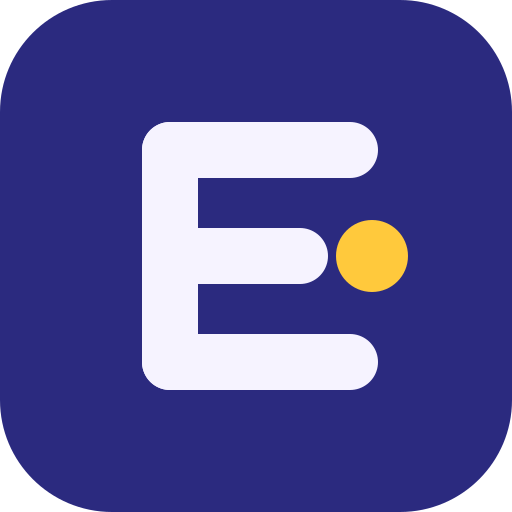

Panduan Merek Eron
Eron adalah komunitas tempat anggota berkumpul, belajar, dan berkarya bersama. Huruf E tersusun dari tiga batang; titik kuning di ujung batang tengah adalah satu anggota yang menonjol di tengah kelompok.
Warna
Indigo
#2B2A7F
utama
#2B2A7F
utama
Deep
#1C1B5A
latar gelap
#1C1B5A
latar gelap
Ink
#14133A
teks
#14133A
teks
Mid
#6C6AD6
sekunder
#6C6AD6
sekunder
Soft
#E4E0FF
kartu, avatar
#E4E0FF
kartu, avatar
Lavender
#F6F3FF
latar halaman
#F6F3FF
latar halaman
Sun
#FFC93C
aksen
#FFC93C
aksen
Aksen kuning dipakai hemat: satu titik atau satu elemen penting per layar.
Logo

- Versi terang untuk latar putih atau lavender; versi gelap untuk latar indigo atau foto gelap.
- Sisakan ruang kosong di sekeliling logo sebesar tinggi huruf E pada ikon.
- Lebar minimum logo horizontal 120 px; di bawah itu pakai ikon saja.
- Jangan memutar, meregangkan, mengubah warna di luar palet, atau menambah bayangan.
- Untuk cetak satu warna, pakai
eron-mark-hitamataueron-mark-putih.
Tipografi
Untuk situs, pakai Plus Jakarta Sans (gratis di Google Fonts), bobot 400 untuk isi dan 700 untuk judul. Cadangan: font sistem. Gambar sosial di paket ini memakai Carlito Bold/Regular, yang sudah diubah ke bentuk kurva sehingga tidak perlu memasang font.
Bentuk dan komponen
Sudut membulat mengikuti ikon: 8 px (input), 14 px (kartu), 28 px (panel besar). Gunakan lencana peran di web/ di samping nama anggota: anggota, moderator, pendiri.
Cara memakai token CSS
<link rel="stylesheet" href="/brand/tokens.css">
button { background: var(--eron-indigo); color: var(--eron-lav); border-radius: var(--radius-md); }